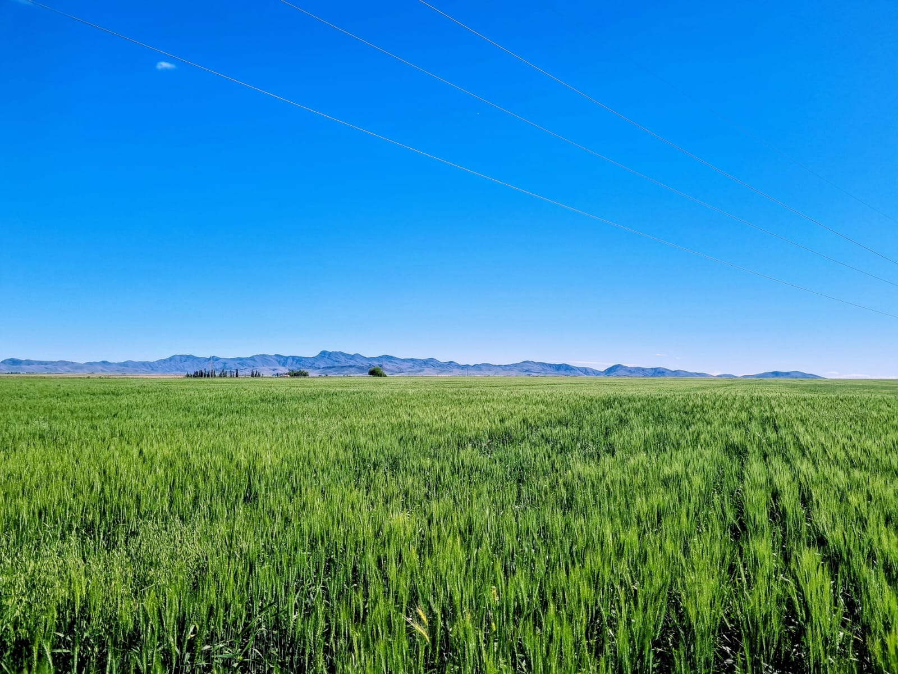

Consultoría técnica para propietarios y herederos de campos en la Provincia de Buenos Aires.
Realizamos la caracterización ambiental del predio, determinamos la actividad productiva que le corresponde y elaboramos el estudio agroeconómico conforme a la normativa vigente.
Cada estudio se elabora con relevamiento a campo y herramientas SIG, adaptándose a las condiciones particulares del predio. Es, además, el punto de partida para cualquier proyecto de partición rural.
Consultar por un estudio agroeconómico →Trabajamos con propietarios y herederos en la formulación de propuestas de partición de campos, realizando los ajustes necesarios para llegar a soluciones equitativas y viables para todas las partes.
Nuestras propuestas se basan en el análisis de imágenes satelitales históricas, tipos y usos del suelo, índices ambientales, datos geográficos e información obtenida a campo. Esto nos permite evaluar la potencialidad real de cada zona, diferenciar ambientes con precisión y asignar valores justos a cada fracción.
Consultar por una partición rural →Nuestro equipo combina la Ingeniería Agronómica y la Geografía con herramientas tecnológicas modernas. Trabajamos con Sistemas de Información Geográfica (SIG) para estudiar el territorio con precisión y elaborar cada estudio agroeconómico con criterio técnico sólido.
La caracterización ambiental del predio, la determinación de la actividad productiva que le corresponde y la elaboración del estudio conforme a la normativa vigente. Combinamos relevamiento a campo con herramientas SIG para adaptarnos a las condiciones particulares de cada campo.
Porque caracteriza el ambiente y la actividad productiva del campo. Con esa información se trabaja después la propuesta de partición.
Analizamos imágenes satelitales históricas, tipos y usos del suelo, índices ambientales, datos geográficos e información obtenida a campo. Así evaluamos la potencialidad real de cada zona, diferenciamos ambientes y asignamos valores justos a cada fracción. Luego trabajamos con propietarios y herederos los ajustes necesarios hasta llegar a una solución viable para todas las partes.
Tenemos base en Casbas y realizamos proyectos en toda la Provincia de Buenos Aires.
Casbas, Buenos Aires.
Disponible para proyectos en toda la Provincia de Buenos Aires.